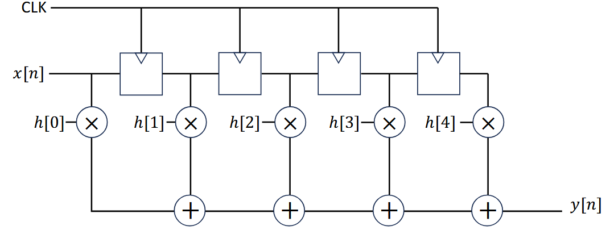
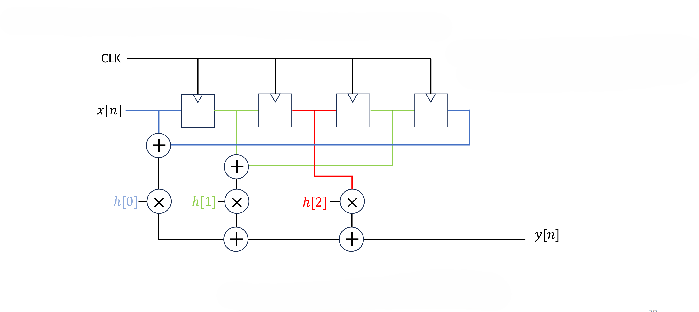

63-Tap FIR Filter IC
Full Custom Digital IC Design in TSMC N16 Process
This project gave me a ground up understanding of how digital designs actually become silicon, moving beyond RTL and synthesis into the real world of floorplanning, routing, and timing closure. Seeing a filter I designed show up as a real layout with metal layers, power stripes, and a clock tree made the entire IC design flow feel real for the first time.
Project Summary
Designed and implemented a 63-tap FIR filter macro block through the complete IC design flow, from RTL to physical layout. The design was synthesized in Cadence Genus using a clock-gated, multi-Vth (LVT) architecture targeting TSMC N16, then taken through the full backend flow in Cadence Innovus — including floorplanning, placement, clock tree synthesis, routing, and signoff. Final deliverables include Verilog, LEF, LIB, and DEF views for SoC integration.
Filter Architecture
The design went through two architectural iterations before synthesis, targeting a more hardware efficient implementation.
Direct-Form FIR

Initial direct form architecture: input shift register with per-tap coefficient multipliers and accumulation chain
The initial design followed the standard direct form FIR structure where a shift register delays the input signal x[n] by one sample per tap, each delayed sample is multiplied by its corresponding filter coefficient h[k], and all products are summed to produce the output y[n]. While straightforward and great for simulation, this requires a unique multiplier for every one of the 63 taps, making it expensive in area and power.
Optimized Folded Architecture

Optimized folded architecture: symmetric coefficients allow inputs sharing the same weight to be pre-summed, cutting multiplier count nearly in half
Since the FIR filter has a symmetric impulse response, coefficients appear in mirrored pairs: h[0]=h[62], h[1]=h[61], and so on. This means two input samples always share the same coefficient, so they can be pre-added before the multiply. This folded architecture reduces the number of multipliers from 63 to 32, significantly cutting area and power. Pipelining registers were also added to shorten the critical path length and enable the higher clock frequency target.
| Design Choice | Selection | Rationale |
|---|---|---|
| Cell Library | LVT (Low Voltage Threshold) | Faster switching to meet 0.58 ns timing target |
| Clock Strategy | Clock Gating (ICG cells) | Reduces dynamic switching power in idle registers |
| Core Utilization | 75% | Balances routing density and die area |
| Supply Voltage | 0.72 V (SS corner) | Worst-case process/voltage/temperature signoff |
Backend Implementation Flow
The complete backend flow was executed in Cadence Innovus, with each stage building on the previous checkpoint:
Physical Implementation
- Floorplanning: Defined core area aligned to technology grid, with 6.48 µm IO padding on all sides
- Placement: Standard cell placement with timing-driven optimization
- Clock Tree Synthesis: Balanced clock distribution to minimize skew across 4531 instances
- Routing: Global and detailed routing, DRC clean
Timing Closure
- Setup analysis: Identified critical paths through MAC accumulator output registers
- Hold ECO: Post-route buffer insertion on clock-gated CDN paths
- Constraint tuning: Reduced holdTargetSlack from 0.07 to 0.01 ns to free setup margin, and included setupTargetSlack to 0.005 to meet setup constraints
- Signoff: Final STA with no timing violations
Verification
Prior to synthesis, the RTL design was verified functionally using Icarus Verilog 12.0 on EDA Playground. Testbenches were written to validate the filter impulse response and confirm correct MAC accumulation across all 63 taps before moving to the backend flow.
A Quick Note
Due to the proprietary nature of the PDK and EDA tool scripts used in this project, I can't share the specific implementation details like the cell library parameters, technology files, and backend scripts.
Final Signoff Results
| Metric | Synthesis | Post-Layout Signoff |
|---|---|---|
| Clock Period | 0.58 ns (1.724 GHz) | 0.58 ns (1.724 GHz) |
| Cell Area | 2173.120 µm² | 2207.192 µm² |
| Total Power | 0.097 mW (VCD) | 7.603 mW (vectorless) |
| Worst Setup Slack | Met (0.000 ns) | Met (0.000 ns) |
| Worst Hold Slack | Met (0.000 ns) | Met (0.000 ns) |
| Cell Instances | -- | 4531 |
Key Takeaway
Synthesis Optimism vs. Physical Reality
The biggest lesson from this project was understanding the gap between synthesis and physical implementation. Paths that closed timing comfortably in Genus violated after routing, because synthesis uses wire load models that significantly underestimate real interconnect delay. Closing that gap required iterating on constraints, utilization, and post-route ECO - the same process used in real ASIC tapeout flows.